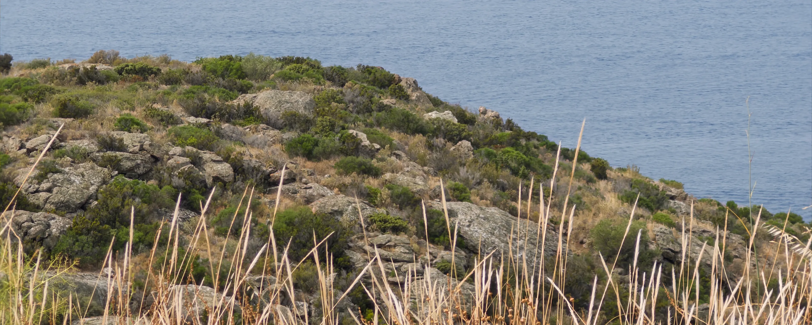

Colophon
Typography
The interface is set primarily in Sora. Its geometric structure feels precise without becoming overly technical.
Italic display moments use Lora, while italic emphasis within articles uses Libre Baskerville. All three font families are served locally.
Photography
Unless credited otherwise, the photographs and original visuals on this site are my own. Credited third-party work remains the property of its creator.
Technologies
I designed and built this as a mostly static, multi-page website using semantic HTML, modern CSS, and vanilla JavaScript. A small Node.js toolchain generates the lists, projects, photography, and writing. Eleventy and Markdown-it render posts, while ImageMagick prepares responsive WebP images.
Two small, same-origin PHP endpoints power the live features: Last.fm activity on the Now page and footer conditions from Open-Meteo. The browser talks only to this site, not directly to either service.
Selected credits
On the Lists page, the “Tech stack and everyday gear” artwork uses Apartment Tech Props by Dekogon Studios.
I assembled the “Articles and videos” artwork from source assets by graphic designer Violetreve, collected in this Pinterest reference. The interface’s few icons come from GitHub Octicons.
Inspiration
These sites and portfolios, in no particular order, shaped the current version’s visual direction, structure, or spirit.

2025